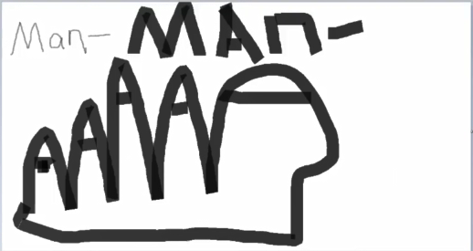
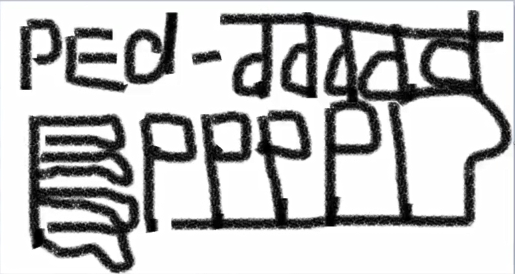

1. 基础导学
elegant /ˈelɪɡənt/ adj. 高雅的，优雅的；讲究的；简炼的；简洁的(e leg ant,朝外漏出大腿的蚂蚁)
catastrophe /kəˈtæstrəfi/ n. 大灾难；大祸；惨败(cat astro=star phe=fly,天上的星星往下飞)
cataract /ˈkætərækt/ n. [眼科] 白内障；大瀑布；暴雨，洪水；奔流(cata r act,向下行动)
2. 词根词汇解读
Man(手, 男人)
manual /ˈmænjuəl/ n. 说明书；小册子; 手册
manuscript /ˈmænjuskrɪpt/ n. 手稿；原稿(script: n. 脚本；手迹；书写用的字母)
describe /dɪˈskraɪb/ vt. 描述，描绘，形容；画出……图形
description /dɪˈskrɪpʃn/ n. 描述，描写；类型；说明书
manipulate /məˈnɪpjuleɪt/ vt. 操纵；操作；巧妙地处理；篡改(man pul=pull,用手拉)
maneuver /mə'nʊvə/ n. [军] 机动；演习；策略；调遣(man eu=o v=p er,=operate操作)
manifest /ˈmænɪfest/ adj. 显然的，明显的；显现出的. v. 表明，清楚显示（尤指情感、态度或品质）；在清单上记录(fest=fast,快 用手去显示)
manifesto /ˌmænɪˈfestəʊ/ n. 宣言；声明；告示. vi. 发表宣言(o用口去表明=宣言)
Ped/Pet(脚, 走)
pet /pet/ n. 宠物；生气；受宠爱的人. vt. 宠爱
compete /kəmˈpiːt/ vi. 竞争；比赛；对抗(com pet,一起 来走=竞争)
competitive /kəmˈpetətɪv/ adj. 竞争的；竞争性的; 比赛的；求胜心切的
competitive price [物价] 竞争价格；[贸易] 公开招标价格; 低价
petition /pəˈtɪʃn/ n. 请愿；请愿书. vi/vt. 请愿；请求(pet=走,it=走. 走啊走)
exit /ˈeksɪt/ n. 出口，通道；退场(ex=向外, it=走)
appetite /ˈæpɪtaɪt/ n. 食欲；欲望; 嗜好(双写辅音字母p + 原因字母a, 表示加强. 一直走一直走...)
biped /ˈbaɪped/ adj. 有两足的. n. 两足动物
millipede /ˈmɪlɪpiːd/ n. [无脊椎] 千足虫；倍足纲节动物（等于millepede）
Per(穿透, 从头到尾, 每)(Per来自pin大头针[穿透])
permanent /ˈpɜːmənənt/ adj. 永久的，永恒的；不变的(per man, 从头到尾都在用手)
perpetual /pəˈpetʃuəl/ adj. 永久的；不断的；四季开花的；无期限的(per pet, 从头到尾都在用脚)
sperm /spɜːm/ n. 精子；精液；鲸蜡油(精子有穿透性)
prosperous /ˈprɒspərəs/ a.繁荣的; 兴旺的(pro朝前的 + sperous精子, 朝前的很多精子->繁殖->繁荣兴旺)
Um(地点)
auditorium /ˌɔːdɪˈtɔːriəm/ n. 礼堂，会堂；观众席; 听众席; 大礼堂
museum /mjuˈziːəm/ n. 博物馆(muse: n/vi/vt 思考,沉思；冥想. 一个陷入思考的地方=博物馆)
Cult(培养)(视频22, time 00:24:00)
aviculture /ˈeɪvɪkʌltʃə(r)/ n. 养鸟；鸟类饲养(avi鸟 + culture文化 = 鸟类饲养)
culture /ˈkʌltʃə(r)/ n. 文化，文明；修养；栽培
cultivate /ˈkʌltɪveɪt/ vt. 培养；陶冶；耕作
cultivate one's mind. 培养一个人的心灵。修生养性
ab(分开, 否定, 加强)
单词见对应笔记